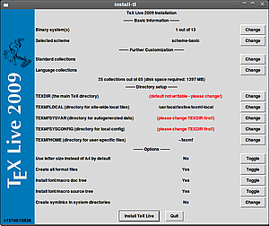
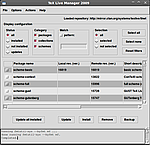

TeX Live DVD-Installation
Dieser Artikel wurde für die folgenden Ubuntu-Versionen getestet:
Ubuntu 16.04 Xenial Xerus
Ubuntu 14.04 Trusty Tahr
Artikel für fortgeschrittene Anwender
Dieser Artikel erfordert mehr Erfahrung im Umgang mit Linux und ist daher nur für fortgeschrittene Benutzer gedacht.
Zum Verständnis dieses Artikels sind folgende Seiten hilfreich:
 TeX Live ist die Standard-TeX-Distribution von Ubuntu und in den offiziellen Paketquellen enthalten. Das Problem ist nur, dass sie zum einen häufig veraltet ist und und zum anderen im Vergleich mit dem originalen TeX Live verändert ist. Um immer die aktuelle Version von TeX Live zu haben, empfiehlt es sich, TeX Live manuell zu installieren.
TeX Live ist die Standard-TeX-Distribution von Ubuntu und in den offiziellen Paketquellen enthalten. Das Problem ist nur, dass sie zum einen häufig veraltet ist und und zum anderen im Vergleich mit dem originalen TeX Live verändert ist. Um immer die aktuelle Version von TeX Live zu haben, empfiehlt es sich, TeX Live manuell zu installieren.
Achtung!
Die manuelle Installation geschieht außerhalb der Aktualisierungsverwaltung von Ubuntu. Zudem kann es zu Schwierigkeiten kommen, da der Paketmanager übergangen wird. Pakete, welche LaTeX als Abhängigkeit haben (dazu gehören viele LaTeX Editoren), können dann nicht mehr ohne weiteres installiert werden.
Umgehen lässt sich dieser Nachteil, wenn man ein Metapaket mit allen Abhängigkeiten erzeugt, das auf die manuell installierte TeX Live Version verweist.
Installation¶
Zuerst muss das ISO-Datei von hier texlive20xx.iso  (
(xx steht für die aktuelle Jahreszahl) heruntergeladen werden (ca. 2,3 GB). Statt eine DVD zu brennen, bindet man die Datei wie folgt ein [1] [2]:
Zunächst ein Verzeichnis, z.B. in /mnt/ erstellen:
sudo mkdir /mnt/texlive20xx
Dann einbinden nach dem Muster:
sudo mount -o loop /Pfad/zum/texlive.iso /Einhängepunkt
Im Normalfall, wenn sich die Datei unter ~/Downloads/ befindet:
sudo mount -o loop ~/Downloads/texlive20xx.iso /mnt/texlive20xx/
(siehe auch mount)
Nun in den Ordner wechseln:
cd /mnt/texlive20xx
Es gibt zwei Möglichkeiten, TeX Live zu installieren:
über die Konsole oder
wie im Abschnitt Grafisch beschrieben über eine grafische Oberfläche (GUI).
Konsole¶
Um die Installation über die Konsole zu starten, muss das Installation-Skript wie folgt gestartet werden:
sudo ./install-tl
Mit dem Parameter --location lässt sich optional der zu verwendende Mirror angeben, etwa wenn der automatisch gewählte nicht der näheste sein sollte:
sudo ./install-tl --location http://mirror.example.org/ctan/path/systems/texlive/tlnet
Grafisch¶
Dies ist die einfachere Möglichkeit, da man so bequem notwendige Einstellungen vornehmen kann. Vor dem Installieren wird neben Perl noch das Paket perl-tk benötigt [3]:
perl-tk
 mit apturl
mit apturl
Paketliste zum Kopieren:
sudo apt-get install perl-tk
sudo aptitude install perl-tk
|  |
| Installationsfenster |
Zum Installieren führt man nun das Installation-Skript wie folgt aus:
sudo ./install-tl gui
Im Installationsassistenten wählt man zunächst aus, was installiert werden soll [4]. Danach ggf. den Installationsordner auswählen und zuletzt kann noch eine grobe Vorkonfiguration von TeX Live vorgenommen werden.
Anpassung der Pfade¶
Nach der Installation müssen noch die Pfade angepasst werden, so dass das System weiß, wohin TeX Live installiert worden ist. Hier wird von einer systemweiten Installation ausgegangen: TeX Live 20xx ist nach /usr/local/ installiert worden. Damit auch systemweit auf TeX Live zugegriffen werden kann, muss die Datei /etc/profile.d/texlive.sh neu angelegt und folgende Zeilen müssen eingetragen werden:
export PATH=/usr/local/texlive/20xx/bin/i386-linux:$PATH export MANPATH=/usr/local/texlive/20xx/texmf-dist/doc/man:$MANPATH export INFOPATH=/usr/local/texlive/20xx/texmf-dist/doc/info:$INFOPATH
Hinweis:
Bei einem 64-Bit System muss in der ersten Zeile i386-linux durch x86_64-linux ersetzt werden.
Hinweis:
Vor TeX Live 2013 waren die Pfade anders. Für Installationen von TeX Live älter als 2013 ist texmf-dist durch texmf zu ersetzen. Für die Pfade heißt das:
export PATH=/usr/local/texlive/20xx/bin/i386-linux:$PATH export MANPATH=/usr/local/texlive/20xx/texmf/doc/man:$MANPATH export INFOPATH=/usr/local/texlive/20xx/texmf/doc/info:$INFOPATH
Nun die editierte Datei sourcen:
source /etc/profile
Hinweis:
Das Sourcen ist ohne Neustart für jede einzelne Shell erneut nötig.
tlmgr – Der TeX Live Manager¶
Nach der manuellen Installation kann nun auch der TeX Live Manager genutzt werden. Allerdings müssen bei systemweiter Installation noch Rechte verändert werden:
sudo chown -hR BENUTZERNAME /usr/local/texlive/20xx
Es wird ein Paketmanager für LaTeX zur Verfügung gestellt, der das Konfigurieren von TeX Live vereinfacht. Der Manager kann mit:
tlmgr
ausgeführt werden. Für eine grafische Oberfläche benötigt man das Paket
perl-tk
mit apturl
Paketliste zum Kopieren:
sudo apt-get install perl-tk
sudo aptitude install perl-tk
Anschließend wird die graphische Oberfläche mit dem folgenden Befehl gestartet:
tlmgr gui
|  |
| TeX Live Manager |
Empfehlenswert ist der Blick in die Manpage von tlmgr.
Zum Beispiel sollte etwa zunächst die Quelle (Repository) geändert werden, um die aktuellste Version von TeX Live zu erhalten:
tlmgr option repository http://mirror.ctan.org/systems/texlive/tlnet tlmgr update --self tlmgr update --list tlmgr update --all
Die beiden anderen Befehle aktualisieren dann TeX Live.
Bei einer Fehlermeldung wie z.B.:
"cannot setup TLPDB in /home/username/texmf"
kann man den Befehl:
tlmgr init-usertree
ausführen. Außerdem muss das Paket xzdec installiert sein.
Paketverwaltung die neue TeX Live Version mitteilen¶
Damit in Zukunft keine TeX Live Pakete aus der Paketverwaltung als Abhängigkeit andere Pakete installiert werden, kann man die gerade manuell installierte Version der Paketverwaltung mitteilen. Dadurch wird der Paketverwaltung praktisch gesagt, dass die nötigen Abhängigkeiten bereits installiert sind. Darüber hinaus wird die manuelle TeX Live Installation auch nicht über die Paketverwaltung aktualisiert. Dies muss (wie im vorangegangenen Abschnitt erklärt) manuell geschehen.
Als erstes müssen folgende Pakete installiert werden:
tex-common
texinfo
equivs
perl-tk
perl-doc
freeglut3
mit apturl
Paketliste zum Kopieren:
sudo apt-get install tex-common texinfo equivs perl-tk perl-doc freeglut3
sudo aptitude install tex-common texinfo equivs perl-tk perl-doc freeglut3
Als nächstes müssen folgende Befehle im Terminal ausgeführt werden:
einen temporären Ordner erstellen, hinein wechseln und die Datei
texlive-localerstellensudo mkdir /tmp/tl-equivs cd /tmp/tl-equivs sudo equivs-control texlive-local
die eben erstellte Datei /tmp/tl-equivs/texlive-local mit einem Editor [5] um die Einträge aus der zur Version passenden Textdatei von https://www.tug.org/texlive/files/, z. B.debian-equivs-2017-ex.txt
ergänzen. Dies kann auch im Terminal mit sudo nano texlive-local
geschehen. Danach die Datei speichern.
Nun folgt die Paket-Erstellung und -Installation:
sudo equivs-build texlive-local sudo dpkg -i texlive-local_*_all.deb
 Übersichtsartikel
Übersichtsartikel- Erstellt mit Inyoka
-
 2004 – 2017 ubuntuusers.de • Einige Rechte vorbehalten
2004 – 2017 ubuntuusers.de • Einige Rechte vorbehalten
Lizenz • Kontakt • Datenschutz • Impressum • Serverstatus -
Serverhousing gespendet von